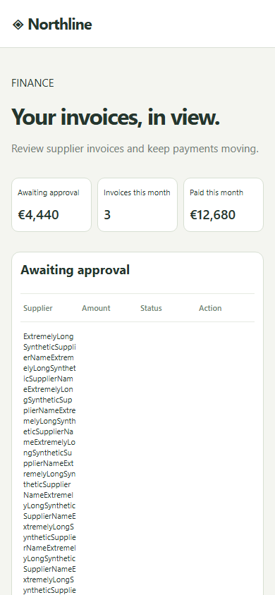

long-values@390x844
passed · 1 endpoint hits · 3 changed values · 431 ms
Blocked requests · writes 0 · external 0
| Check | Status | Expected | Observed |
|---|
| target-visible-after-response | passed | visible | visible |
| page-overflow | passed | 390 | 390 |
| target-horizontal-position | passed | Horizontal bounds 0–390 | 282–330 |
| uncaught-javascript-errors | passed | 0 | 0 |

break-my-dashboard replay --run "/local/synthetic-demo/fixed/run.json" --case "long-values@390x844"